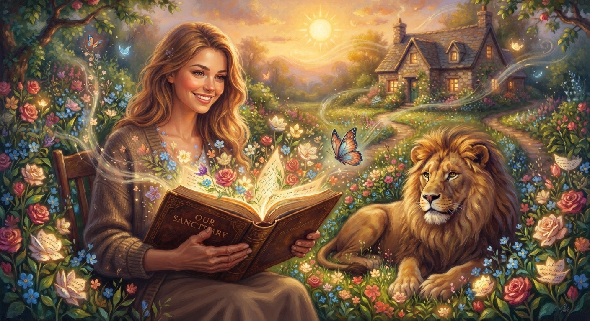

Unspoken: Poems of Love and Memory

Where His Memories Bloom
About this poem
Where His Memories Bloom is a reflection on how words can preserve a love and memories that time could never completely erase.
The garden in this poem is not a physical place. It is the quiet space within the heart where unspoken words, cherished
memories, and enduring emotions continue to live. Each flower represents something once left unsaid, while the passing
of decades has transformed a single chapter of life into an entire book of memories.
🎵 "Harp" - atlasaudio (Pixabay Music)
